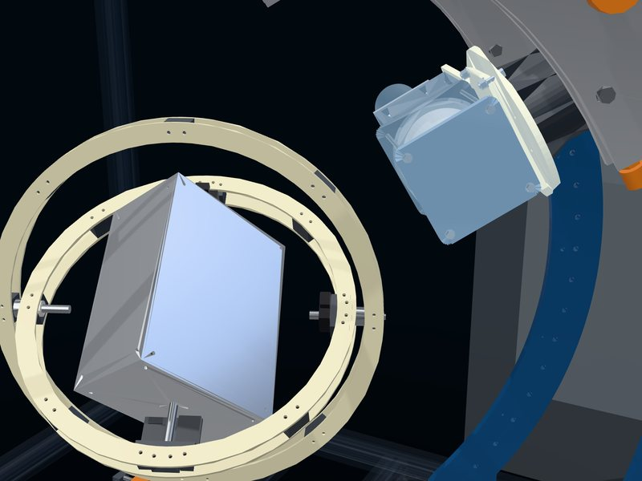
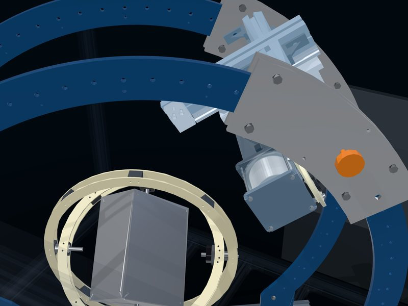
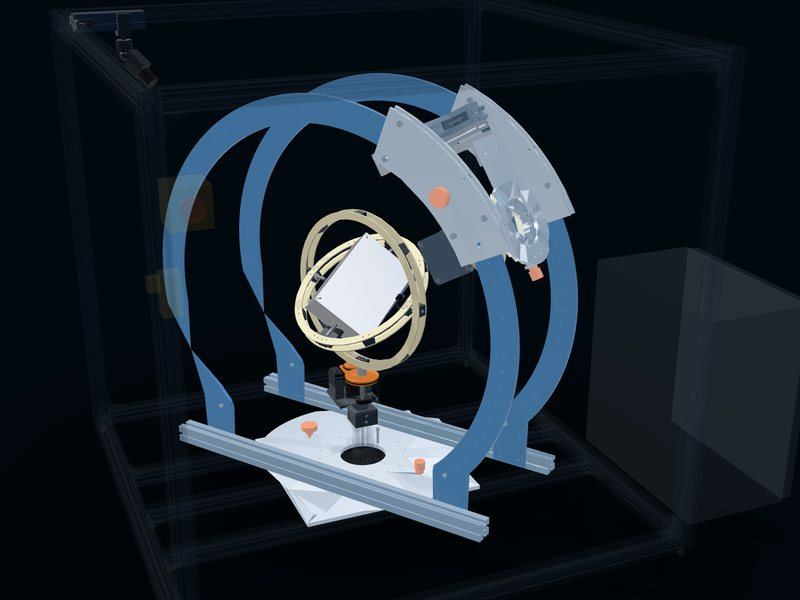
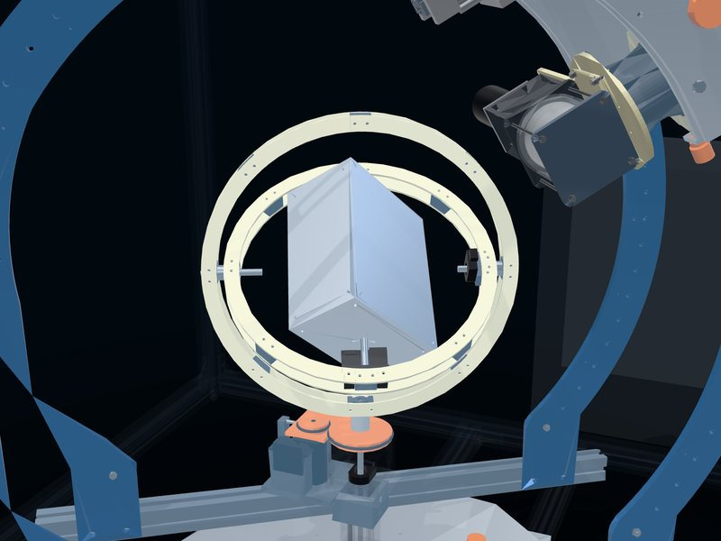
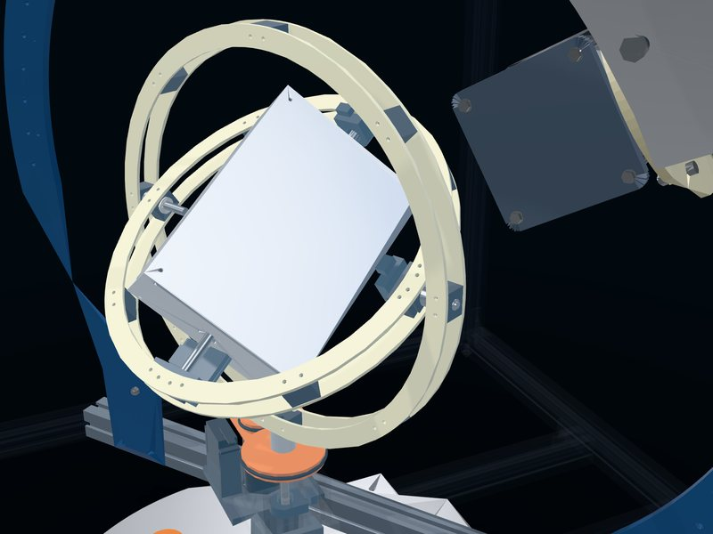
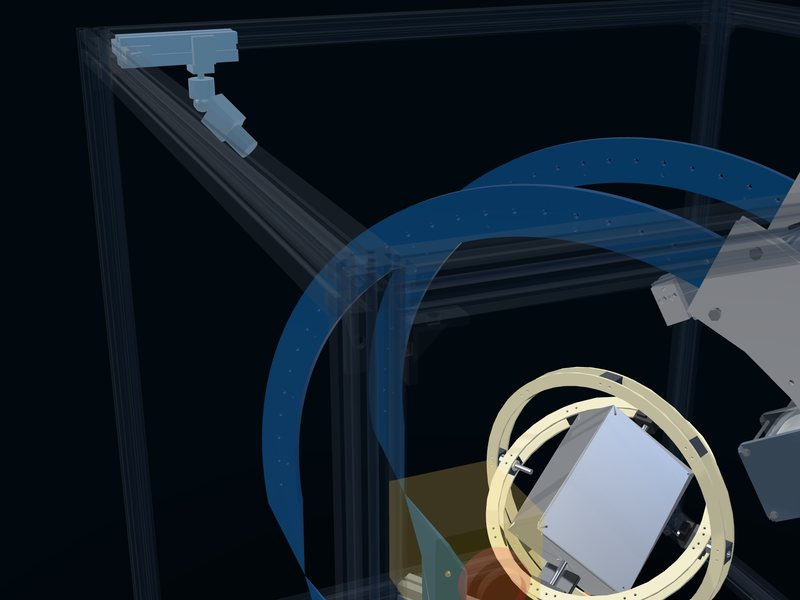
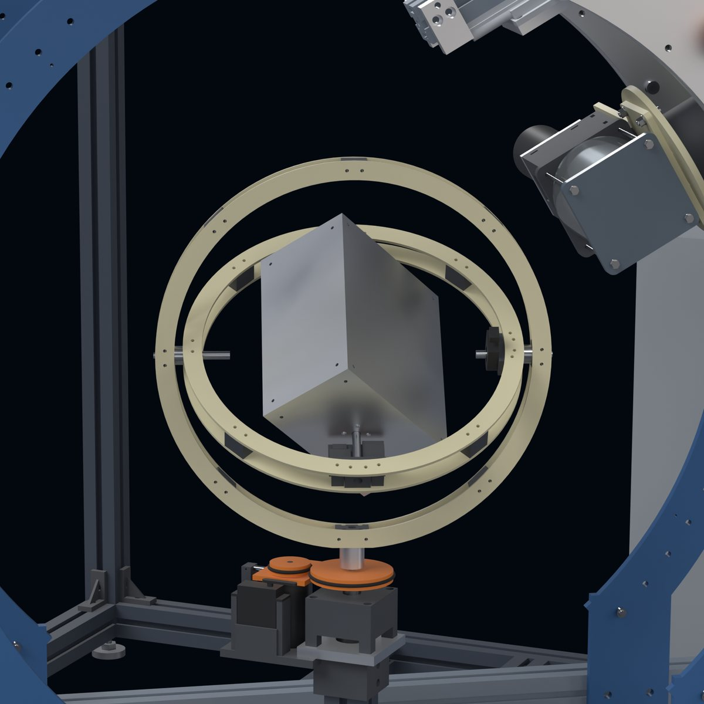

Research / Bench test
The bench test
A spinning magnet will slow a tumbling aluminum box, without touching it.
Rendered from our CAD
What it tests

BrakingHow hard the magnet brakes, at each speed. 
GapHow braking falls off with distance. 
AngleBraking from any side, at any angle. 
TumbleA free tumble on three axes. 
Spin rateA sensor on each axis logs the slowdown. 
TrackingA depth camera follows the tumble, no markers.


Rendered from our CAD. The rig is not built yet.